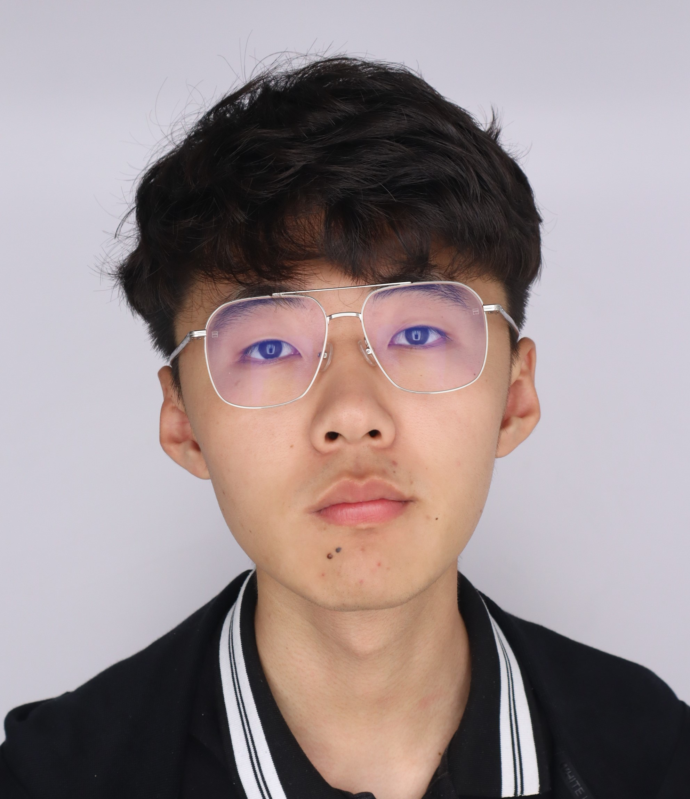

|
Yuxuan Liu
I am a second-year master's student at Elmore Family School of Electrical and Computer Engineering, Purdue University, advised by Prof. Prof. Qi Guo.
My current research focuses on computational photography, especially exploring advanced imaging techniques that bridge optical design and computational methods. Before entering Purdue, I
obtained my bachelor's degree from College of Optical Science and Engineering, Zhejiang University.
Email /
CV /
Scholar /
Github
|

|
|
|
MetaHDR: Single Shot High-dynamic Range Imaging Using a Multifunctional Metasurface
Charles Brookshire*,
Yuxuan Liu*,
Yuanrui Chen,
Wei Ting Chen,
Qi Guo
Optics Express, 2024
project page
/
paper
A metasurface solution to single-shot HDR imaging that provides 55 dB and 10 dB dynamic range increase compared to the original image and previous snapshot HDR imaging methods
|
|
|
Depth from Coupled Optical Differentiation
Junjie Luo,
Yuxuan Liu,
Emma Alexander,
Qi Guo
Submitted to IJCV, 2024
project page
/
paper
A novel low-computation passive-lighting depth-sensing theory that is at least ten times more efficient than the previous best.
|
|
{kind=link}